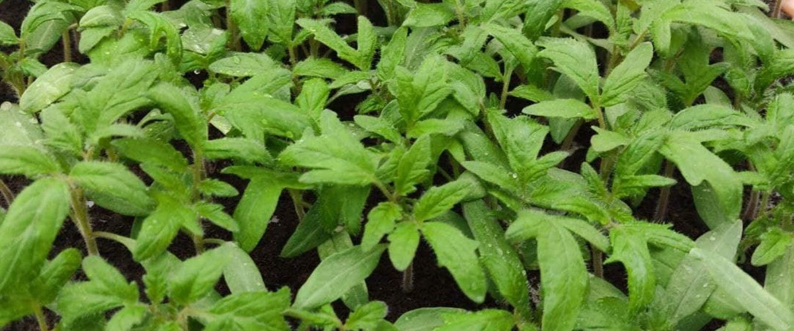

Важная информация для производителей рассады

С 2025 года вступили в силу новые требования по производству и реализации рассады. Согласно ПП №713 от 12-09-2013
«Об утверждении Требований к производству и реализации семян, рассады и материала для посадки овощных культур.», для реализации рассады овощей в Республике Молдова, производители должны пройти процедуру сертификации
PS/FS-MS-02/01, которая управляется Дирекцией Контроля семян и посадочного материала, в Национальном Агентстве по Безопасности Продуктов (ANSA).
Необходимые документы:
Заявление:к заявлению прилагаются: документ регистрации предприятия, документ о праве пользования
землей, на которой выращивается рассада.
Декларация о размножении:Документ, в котором указаны детали культур, предназначенных для
размножения.
Соблюдение этой процедуры гарантирует, что рассада и посадочный материал овощей, произведенные и продаваемые в
Республике Молдова, соответствуют стандартам качества и национальным требованиям.
Продажа рассады без сертификата
влечёт наложение штрафа на физических лиц в размере от 6 до 15
условных единиц, на должностных лиц в размере от 15 до 42 условных единиц и на юридических лиц в размере от 42
до 90 условных единиц с лишением или без лишения во всех случаях права осуществлять определенную деятельность
на срок от 3 месяцев до 1 года.
Заявление с пакетом документов на регистрацию можно подать в территориальном управлении по
Безопасности пищевых продуктов г.Тараклия, ул. Ленина №6
Тел.: 0294(22638)
Читать на legis.md
Курсы для потребителей средств фитосанитарного назначения

С 2024года на платформе eLearning Агентства по Безопасности Пищевых Продуктов
открыты курсы по устойчивому применению пестицидов. Эти курсы предназначены для фермеров,
агрономов, производителей сельскохозяйственной продукции и всех, кто занимается защитой растений.
Основная цель программы – обучить участников безопасному и эффективному использованию средств фитосанитарного назначения
с минимальным воздействием на окружающую среду и здоровье людей. В курсе подробно рассматриваются методы применения пестицидов,
правила хранения и предотвращение загрязнений. Стоимость курсов 310 лей. Программа разработана в соответствии с европейскими
стандартами и законодательством Республики Молдова. Успешно завершившим обучение выдаются сертификаты, подтверждающие их
знания в области устойчивого применения средств фитосанитарного назначения. Согласно Закона 119/2004 о средствах фитосанитарного назначения
данный курс обязателен для пользователей пестицидов I - II группы токсичности
Перейти на курсы
Вниманию всех производителей сельскохозяйственной продукции растительного происхождения!

Аннулирован Закон 228/2010г. О защите растений и фитосанитарном карантине. С 14 сентября 2024 года вступил в силу Закон № 422
О защитных мерах против вредных для растений организмов. Закон направлен на предотвращение ввоза и распространения вредных организмов,
угрожающих сельскому хозяйству. Он вводит фитосанитарные меры для защиты растений и гармонизирует законодательство с европейскими стандартами.
Читать на legis.md